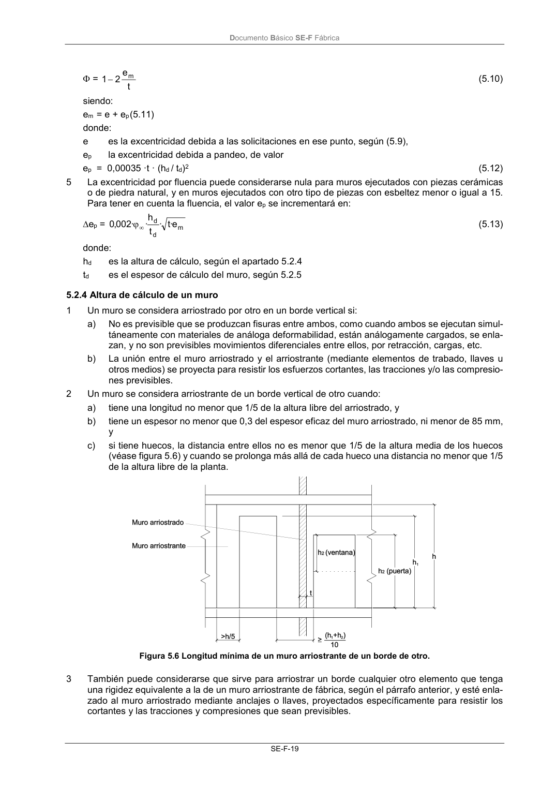

DB-SE-F Fábrica · edición 2019-12-20 · capa oficial
Documento DB-SE-F-oficial · SHA-256 del PDF e3e0805c3b4c307519c26dc34c3fdbf143d842edd013c91b0f52d2c73403d91c
Página física 23 de 70.
Copia fiel del PDF fuente · Fuente oficial
Ficha de la disposición en la fuente oficial
Formato: Texto de la página (Markdown)
Documento Básico SE-F Fábrica SE-F-19 = t e 2 1 m (5.10) siendo: em = e + ep (5.11) donde: e es la excentricidad debida a las solicitaciones en ese punto, según (5.9), ep la excentricidad debida a pandeo, de valor ep = 0,00035 ·t · (hd / td)2 (5.12) 5 La excentricidad por fluencia puede considerarse nula para muros ejecutados con piezas cerámicas o de piedra natural, y en muros ejecutados con otro tipo de piezas con esbeltez menor o igual a 15. Para tener en cuenta la fluencia, el valor ep se incrementará en: ep = m d d e·t · t h · · 002 ,0 (5.13) donde: hd es la altura de cálculo, según el apartado 5.2.4 td es el espesor de cálculo del muro, según 5.2.5 5.2.4 Altura de cálculo de un muro 1 Un muro se considera arriostrado por otro en un borde vertical si: a) No es previsible que se produzcan fisuras entre ambos, como cuando ambos se ejecutan simul- táneamente con materiales de análoga deformabilidad, están análogamente cargados, se enla- zan, y no son previsibles movimientos diferenciales entre ellos, por retracción, cargas, etc. b) La unión entre el muro arriostrado y el arriostrante (mediante elementos de trabado, llaves u otros medios) se proyecta para resistir los esfuerzos cortantes, las tracciones y/o las compresio- nes previsibles. 2 Un muro se considera arriostrante de un borde vertical de otro cuando: a) tiene una longitud no menor que 1/5 de la altura libre del arriostrado, y b) tiene un espesor no menor que 0,3 del espesor eficaz del muro arriostrado, ni menor de 85 mm, y c) si tiene huecos, la distancia entre ellos no es menor que 1/5 de la altura media de los huecos (véase figura 5.6) y cuando se prolonga más allá de cada hueco una distancia no menor que 1/5 de la altura libre de la planta. Figura 5.6 Longitud mínima de un muro arriostrante de un borde de otro. 3 También puede considerarse que sirve para arriostrar un borde cualquier otro elemento que tenga una rigidez equivalente a la de un muro arriostrante de fábrica, según el párrafo anterior, y esté enla- zado al muro arriostrado mediante anclajes o llaves, proyectados específicamente para resistir los cortantes y las tracciones y compresiones que sean previsibles.
